Peer Global File Service {#peer}
The estimated time to complete this lab is 60 minutes.
Google Chrome, Apple Safari, or Microsoft Edge is recommended for this lab.
Overview
The explosive growth of unstructured data has driven organizations to seek solutions to efficiently store, share, manage, and protect an ever-growing universe of data while deriving new value and intelligence. Since 1993, Peer Software has focused on these requirements and more by building best-of-breed data management and real-time replication solutions for distributed on-premises and cloud storage environments.
Peer's flagship offering, Peer Global File Service (PeerGFS), features enterprise-class replication technology with integrated file locking and a globally accessible namespace that powers multi-site, multi-vendor, and multi-cloud deployment.
PeerGFS enables fast local data access for users and applications at different locations, protects against version conflicts, makes data highly available, and allows Nutanix Files to co-exist with legacy NAS platforms to ease adoption of Files into existing environments.
Key use cases for combining Peer Software with Nutanix include:
- Global File Sharing and Collaboration - Deliver fast local access to shared project files for distributed teams while ensuring version integrity and high availability.
- HA and Load Balancing for User and Application Data - Enable high availability and load balancing of end user data as well as application data.
- Storage Interoperability - Cross-platform support powers coexistence of Nutanix Files with existing NAS and hybrid cloud storage systems, as well as between file and object formats.
- Analysis and Migration - Analyze existing storage for resource planning, optimization, and migrations. Analysis combined with real-time replication powers minimally disruptive data migrations.
How does it work?

Working from left to right, users interact with the SMB shares on the Nutanix Files cluster via a public LAN. When SMB activity occurs on the Files cluster through these shares, the Peer Partner Server (referred to as a Peer Agent) is notified via the File Activity Monitoring API from Files. The Peer Agent accesses the updated content via SMB, and then facilitates the flow of data to one or many remote and/or local file servers.
In this lab you will configure Peer Global File Service to create an Active-Active file services solution with Nutanix Files, replicate content from Nutanix Files to Nutanix Objects, and use our File System Analyzer tool to analyze some sample data.
Lab Setup
::: note ::: title Note :::
This lab requires the windows_tools_vm{.interpreted-text role="ref"}.
:::
Files
This lab requires an existing Nutanix Files deployment on your assigned cluster. Details on how to configure Nutanix Files for use with Peer Global File Service can be found in the Configuring Nutanix Files section below.
Peer VMs
In this exercise, you will be using three shared VMs, all of which should already be available on your assigned cluster.
VM Name Description
PeerMgmt This server is running the Peer Management Center.
PeerAgent-Files This server will manage the Nutanix Files cluster.
PeerAgent-Win This Windows File Server will be used as a target for replication.
Configuring Nutanix Files
Peer Global File Service requires both a File Server Admin account as well as REST API access to orchestrate replication to or from Nutanix Files.
-
Log in to Prism Element (e.g. 10.XX.YY.37) on your Nutanix cluster.
-
Navigate to File Server from the drop down navigation and select the BootcampFS deployment.
-
Click + Share/Export and fill out the following fields:
- Name - Initials-Peer
- Description (Optional) - Leave blank.
- File Server - BootcampFS
- Share Path (Optional) - Leave blank.
- Max Size (Optional) - Leave blank.
- Select Protocol - SMB
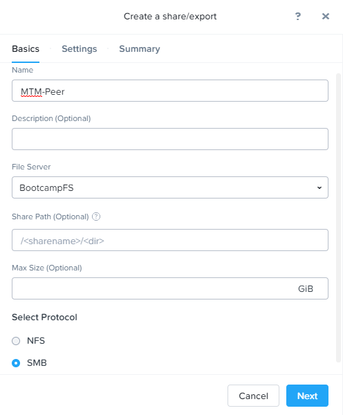
-
Click Next, Next, and then Create.
-
Click Manage roles.
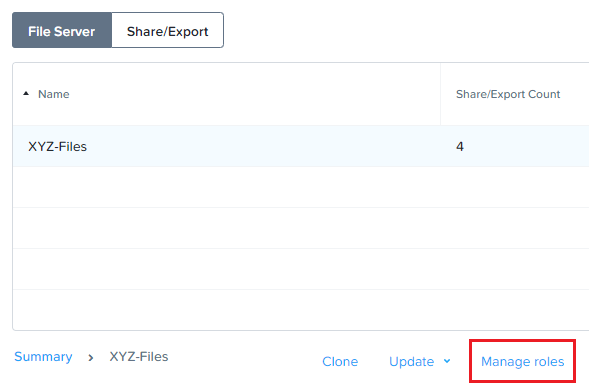
-
Under Add admins, NTNXLAB\Administrator should already be added as a File Server Admin. If not, click + New user and add NTNXLAB\Administrator.
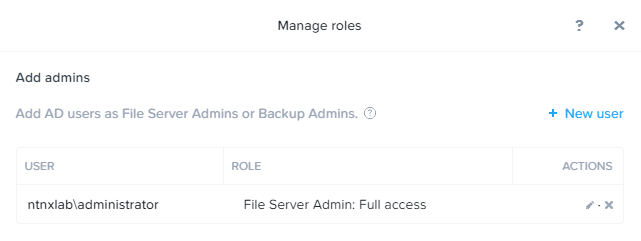
::: note ::: title Note :::
In a production environment, you would likely use an Active Directory service account for Peer. :::
-
Under REST API access users, check to see if a peer account has already been created. If not, click + Add new user, fill out the following fields, and click Save:
-
Username - peer
The username must be in all lower case.
-
Password - nutanix/4u
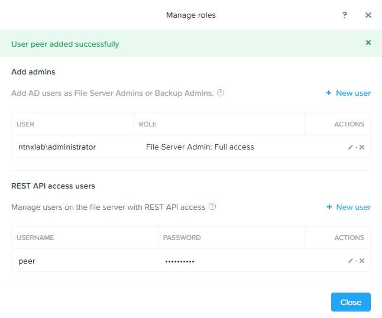
::: note ::: title Note :::
All participants on a single Nutanix AOS cluster will be sharing the same BootcampFS file server, as well as the peer API account. :::
-
-
Click Close.
Staging Test Data on PeerAgent-Win
The final step of staging the lab is creating some sample data on PeerAgent-Win, which will be acting as a Windows File Server. Peer is capable of replicating between multiple Files clusters, as well as between a mix of Files and other NAS platforms. For this lab, you will be replicating between your Nutanix Files cluster and a Windows File Server.
-
Connect to your Initials-Windows-ToolsVM via RDP using the following credentials:
- Username - NTNXLAB\Administrator
- Password - nutanix/4u
-
Open File Explorer and navigate to
\\PeerAgent-Win\Data. -
Create a copy of the Sample Data folder. Rename the copy to Initials-Data as shown below.
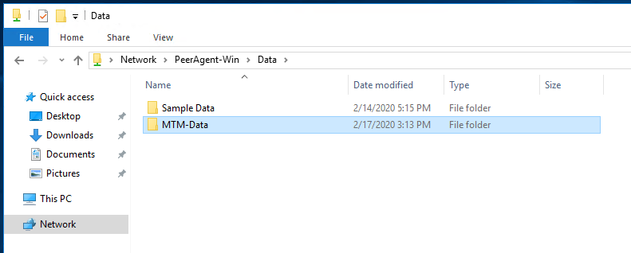
Connecting to the Peer Management Center Web Interface
The Peer Management Center (PMC) serves as the centralized management component for Peer Global File Service. It does not store any file data but does facilitate communication between locations, so it should be deployed at a location with the best connectivity. A single deployment of PMC can manage 100 or more Agents/file servers.
For this lab, you will be accessing a shared PMC deployment via a web interface.
-
Open a non-Firefox browser (Chrome, Edge, and Safari will all work) on your Initials-Windows-ToolsVM VM or on your laptop.
-
If you are using a browser on your Initials-Windows-ToolsVM VM, browse to https://PeerMgmt:8443/hub
-
If you are using a browser on your laptop, log in to Prism Element (e.g. 10.XX.YY.37) on your Nutanix cluster to find the IP of the PeerMgmt VM, then browse to https://IP-of-PeerMgmt-Server:8443/hub
-
When prompted to login, use the following credentials:
- Username - admin
- Password - nutanix/4u
-
Once connected, confirm that PeerAgent-Files and PeerAgent-Win both appear in green in the Agents view in the bottom left of the PMC web interface.
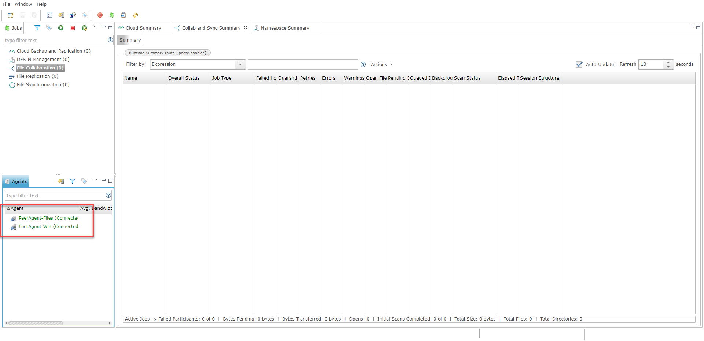
::: note ::: title Note :::
If the two Agent servers are not appearing in the bottom left of the PMC web interface, go into Prism and reboot the VMs named PeerAgent-Files and PeerAgent-Win. :::
Introduction to Peer Global File Service
Peer Global File Service utilizes a job-based configuration engine. Several different job types are available to help tackle different file management challenges. A job represents a combination of:
- Peer Agents.
- The file servers that are being monitored by those Agents.
- A specific share/volume/folder of data on each file server.
- Various settings tied to replication, synchronization and/or locking.
When creating a new job, you will be prompted by a dialog outlining the different job types and why you would use each type.
Available job types include:
- Cloud Backup and Replication - Real-time replication from enterprise NAS devices to public and private object storage with support for volume-wide point-in-time recovery. Each file is stored as a single, transparent object with optional version tracking.
- DFS-N Management - Manages new and existing Microsoft DFS Namespaces. Can be combined with File Collaboration and/or File Synchronization jobs to automate DFS failover and failback.
- File Collaboration - Real-time synchronization combined with distributed file locking to power global collaboration and project sharing across enterprise NAS platforms, locations, cloud infrastructures, and organizations.
- File Replication - One-way real-time replication from enterprise NAS platforms to any SMB destination.
- File Synchronization - Multi-directional real-time synchronization powering high availability of user and application data across enterprise NAS platforms, locations, cloud infrastructures, and organizations.
Creating a New File Collaboration Job
In this section, we will focus on File Collaboration.
-
In the PMC Web Interface, click File > New Job.
-
Select File Collaboration and click Create.
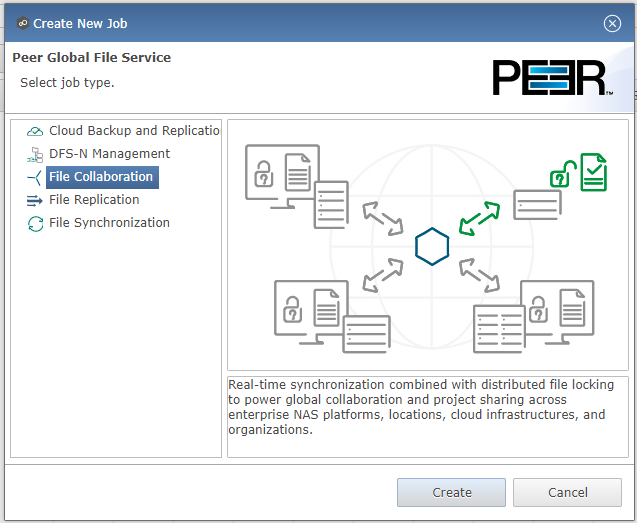
-
Enter Initials - Collab as the name for the job and click OK.
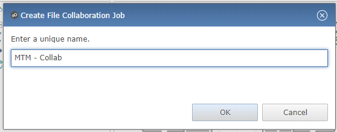
Files and PeerAgent-Files
-
Click Add to begin pairing a Peer Agent with your Nutanix Files cluster.
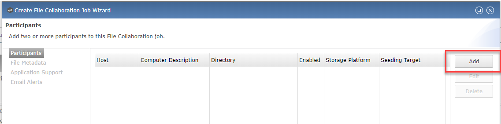
-
Select Nutanix Files and click Next.
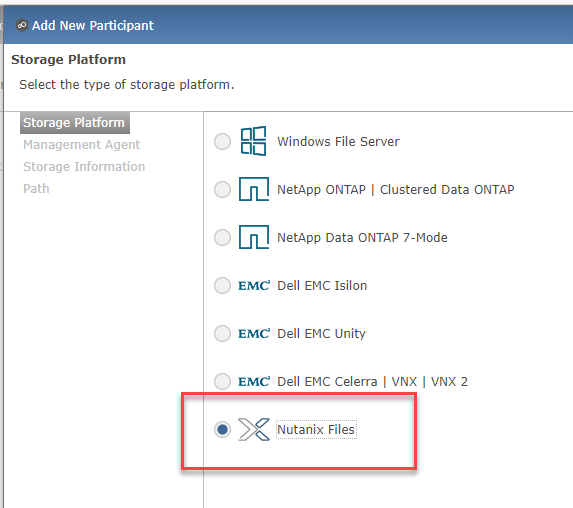
-
Select the Agent named PeerAgent-Files and click Next. This Agent will manage the Files cluster.
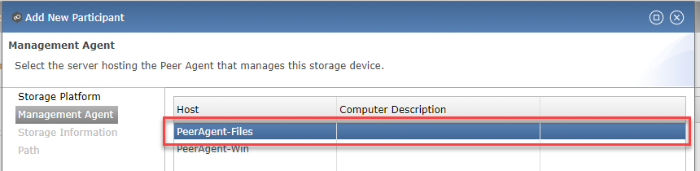
-
On the Storage Information page, you are prompted to enter credentials for accessing the storage device. If another participant sharing your Files cluster has already done the Peer lab, you can select Existing Credentials as shown here.
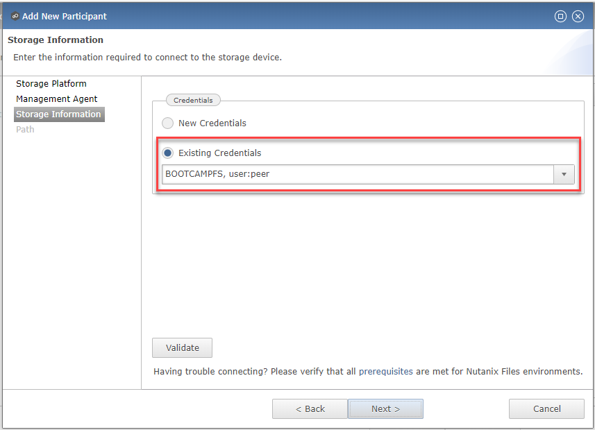
If you are the first participant on this cluster to do the Peer lab, New Credentials will be automatically selected. Fill out the following fields:
-
Nutanix Files Cluster Name - BootcampFS
The NETBIOS name of the Files cluster that will be paired with the Agent selected in the previous step.
-
Username - peer
This is the Files API account username configured earlier in the lab and must be in all lower case.
-
Password - nutanix/4u
The password associated with the Files API account.
-
Peer Agent IP - PeerAgent-Files IP Address
The IP address of the Agent server that will receive real-time notifications from the File Activity Monitoring API built into Files. It is selectable from a drop-down list of available IPs on this Agent server.
-
-
Click Validate to confirm Files can be accessed via API using the provided credentials.
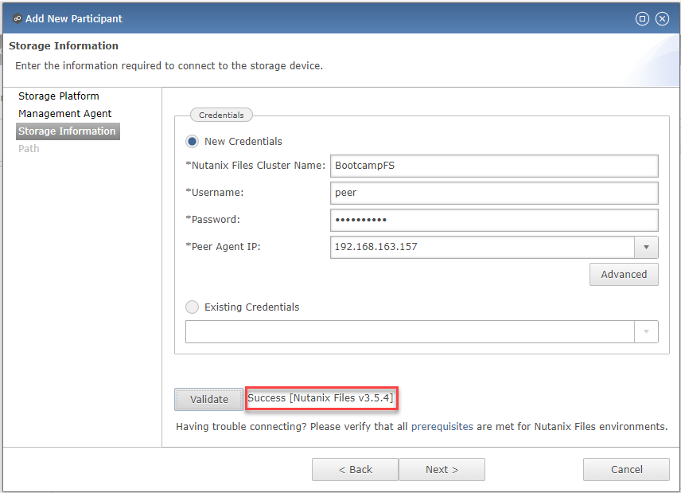
::: note ::: title Note :::
Once you enter these credentials, they are reusable when creating new jobs that use this particular Agent. When you create your next job, select Existing Credentials on this page to display a list of previously configured credentials. :::
-
Click Next.
-
Click Browse to select the share you wish to replicate. You can also navigate to a subfolder below a share.
-
Select your Initials-Peer share and click OK.
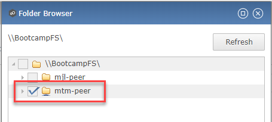
::: note ::: title Note :::
Peer Global File Service supports the replication of data within nested shares starting with Nutanix Files v3.5.1 and above. :::
::: note ::: title Note :::
You can only select a single share or folder. You will need to create an additional job for each additional share you wish to replicate. :::
-
Click Finish. You have now completed pairing PeerAgent-Files to Nutanix Files.
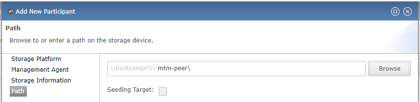
PeerAgent-Win
To simplify this lab exercise, a second Peer Agent server running on the same cluster will function as a standard Windows File Server. While Peer can be used to replicate shares between Nutanix Files clusters, one of its key advantages is the ability to work with a mix of NAS platforms. This can help drive adoption of Nutanix Files when only a single site has been refreshed with Nutanix Files, but replication is still required to support collaboration or disaster recovery.
-
Repeat Steps 1-8 in Files and PeerAgent-Files to add PeerAgent-Win to the job,
<strong><font color="red">making the following changes</font></strong>{=html}:- Storage Platform - Windows File Server
- Management Agent - PeerAgent-Win
- Path - C:\Data\Initials-Data
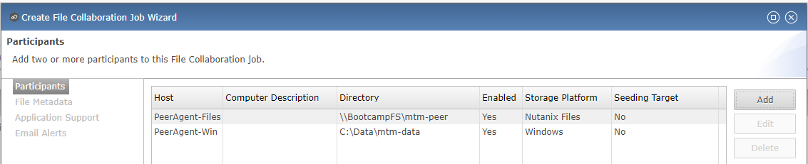
-
Click Next.
Completing Collaboration Job Configuration
Peer offers robust functionality for handling the synchronization of NTFS permissions between shares:
-
Enable synchronizing NTFS security descriptors in real-time
Select this checkbox if you want changes to file and folder permissions to be replicated to the remote file servers as they occur.
-
Enable synchronizing NTFS security descriptors with master host during initial scan
Select this if you want the initial scan to look for and replicate any permissions that are not in sync across file servers. This requires selecting a master host to help resolve situations where the engine cannot pick a winner in a permission discrepancy.
-
Synchronize Security Description Options
(Optional) Select the NTFS permission types you would like to replicate.
-
Owner
The NTFS Creator-Owner who owns the object (which is, by default, whoever created it).
-
DACL
A Discretionary Access Control List identifies the users and groups that are assigned or denied access permissions on a file or folder.
-
SACL
A System Access Control List enables administrators to log attempts to access a secured file or folder. It is used for auditing.
-
-
File Metadata Conflict Resolution
If there is a permission discrepancy between two or more sites, the permissions set on the file server tied to the master host will override those on the other file servers.
-
For the purposes of this lab exercise, accept the default configuration and click Next.
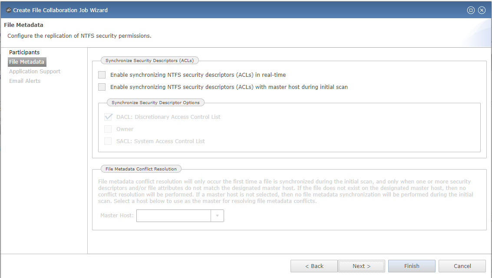
-
Under Application Support, select Microsoft Office.
The Peer synchronization and locking engine is automatically optimized to best support any of the selected applications.
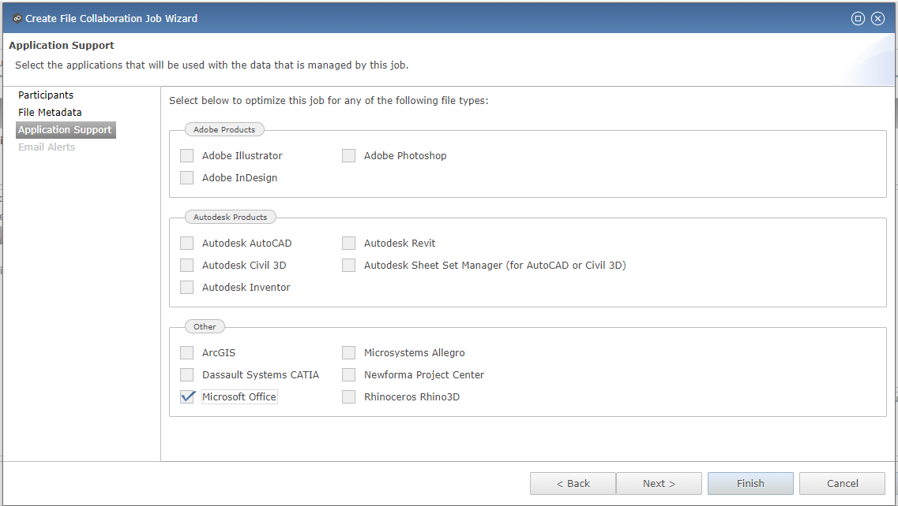
-
Click Finish to complete the job setup.
Starting a Collaboration Job
Once a job has been created, it must be started to initiate synchronization and file locking.
-
In the PMC Web Interface, under Jobs, right-click on your newly created job, and then select Start.
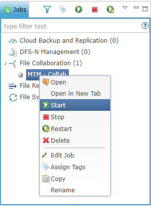
When the job starts:
- Connectivity to all Agents and Files clusters (or other NAS devices) is checked.
- The real-time monitoring engine is initialized.
- A background scan is kicked off to ensure all file servers are in sync with another.
-
Double-click the job in the Job pane to view its runtime information and statistics.
::: note ::: title Note :::
Click Auto-Update to have the console regularly refresh as files begin replicating. :::
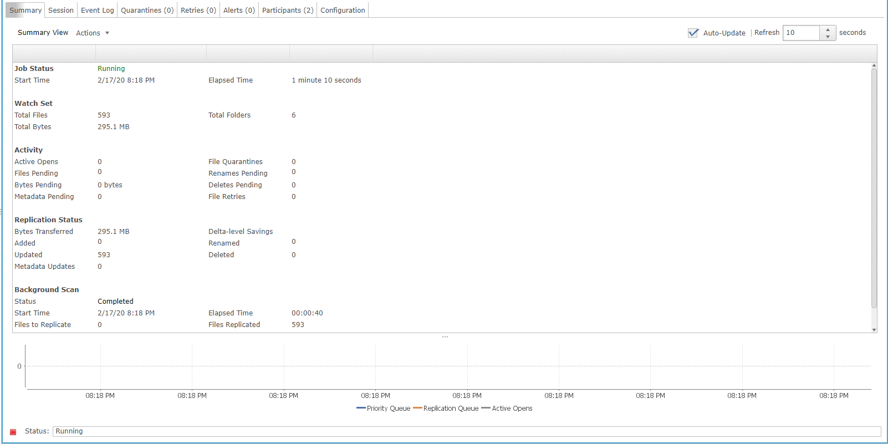
Testing Collaboration
The easiest way to verify synchronization is functioning properly is to open separate File Explorer windows for the Nutanix Files and Windows File Server paths.
::: note ::: title Note :::
Do not test using an Agent server VM. All activity from these servers are automatically filtered to reduce overhead on the Nutanix Files cluster. :::
-
Connect to your Initials-Windows-ToolsVM via RDP using the following credentials:
- Username - NTNXLAB\Administrator
- Password - nutanix/4u
-
Open File Explorer and browse to your Nutanix Files share, e.g.,
\\BootcampFS\Initials-Peer. Drag this window to the left side of the desktop.Note that the sample data seeded in the Windows File Server during lab setup has already been replicated to Nutanix Files.
::: note ::: title Note :::
You can also verify the replicated files in Prism > File Server. :::
-
Open a second File Explorer window and browse to your Windows File Server share, e.g.,
\\PeerAgent-Win\Data\Initials-Data. Drag this window to the right side of the desktop.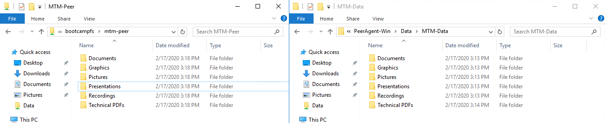
-
In the File Explorer on the left, create a copy of one of the sample data directories by copying and pasting within the root of the share (shown below).
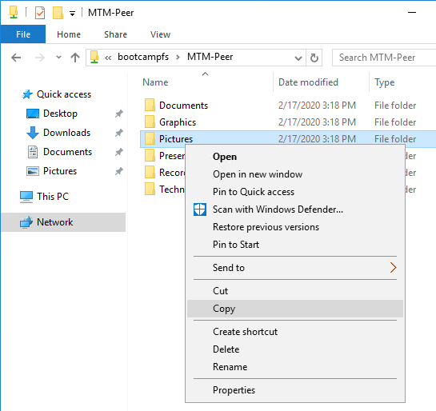
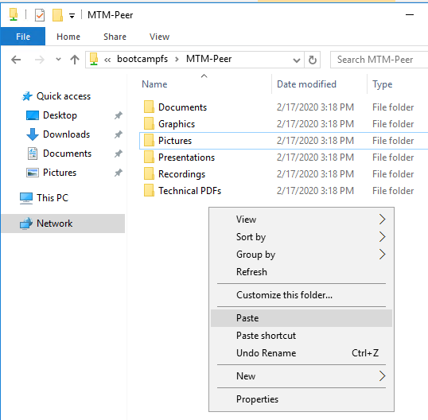
-
The changes that are performed on the Nutanix Files share will be sent to its paired Agent; the Agent will then facilitate the replication of these files and folders to the other server (and vice versa).
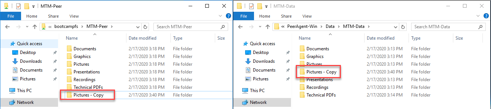
-
To test file locking, create a new OpenDocument Text file within the root of your Nutanix Files share, e.g.,
\\BootcampFS\Initials-Peer.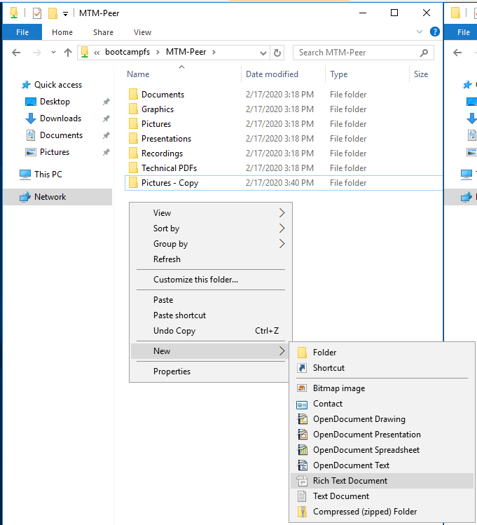
-
Name the file. Within a few seconds, it should appear under your Windows File Server share, e.g.,
\\PeerAgent-Win\Data\Initials-Data.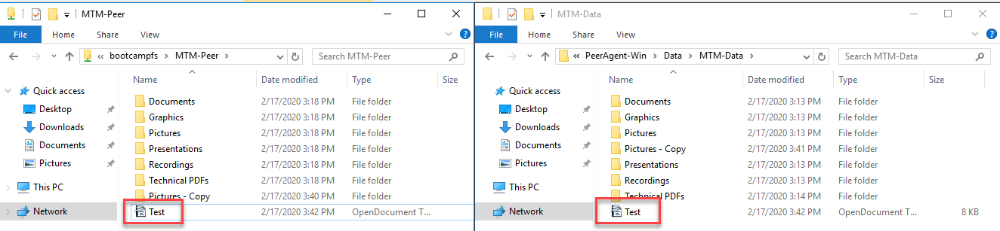
-
Open the file under the Nutanix Files share with OpenOffice Writer. Next, open the file with the same name under
\\PeerAgent-Win\Data\Initials-Data. You should see the following warning that the file is locked.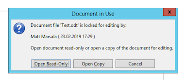
Congratulations! You have successfully deployed an Active-Active file share replicated across two file servers. Using Peer, this same approach can be leveraged to support file collaboration across sites, migrations from legacy solutions to Nutanix Files, or disaster recovery for use cases such as VDI, where user data and profiles need to be accessible from multiple sites for business continuity.
Working with Nutanix Objects
Peer Global File Service includes the ability to push data from NAS devices into object storage. The same real-time replication technology used to power the collaboration scenario above can also be used to replicate data into Nutanix Objects with optional snapshot capabilities for point-in-time recovery. All objects are replicated in a transparent format that can be immediately used by other apps and services.
This lab section will walk you through the necessary steps to replicate data from Nutanix Files into Nutanix Objects.
Getting Client IP and Credentials for Nutanix Objects
In order to replicate data into Objects, you need the Client IP of the object store and need to generate access and secret keys. If you already have this information from a prior lab, you can skip this section and re-use that existing information.
-
Log in to Prism Central (e.g., 10.XX.YY.39) on your Nutanix cluster, and then navigate to Services > Objects.
-
In the Object Stores section, find the appropriate object store in the table and note the Client Used IPs.
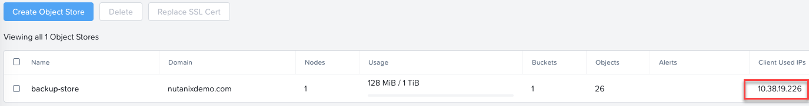
-
Click on the Access Keys section and click Add People to begin the process for creating credentials.
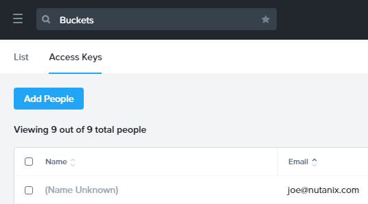
-
Select Add people not in Active Directory and enter your e-mail address.
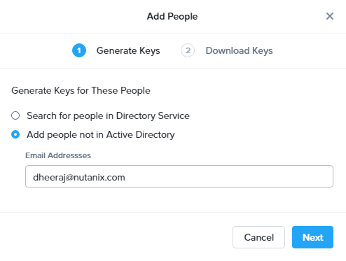
-
Click Next.
-
Click Download Keys to download a .csv file containing the Access Key and Secret Key.
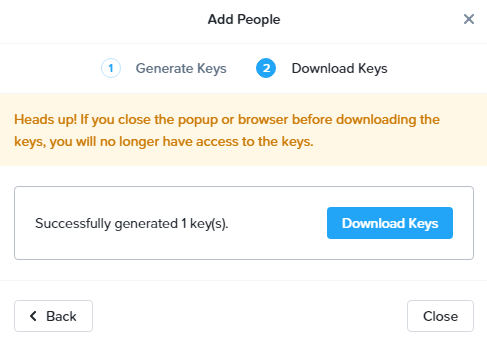
-
Click Close.
-
Open the file with a text editor.
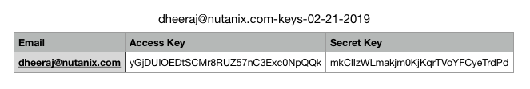
::: note ::: title Note :::
Keep the text file open so that you have the access and secret keys readily available for the sections below. :::
Creating a New Cloud Replication Job
In this section, we will focus on creating a Cloud Backup and Replication job to replicate data from Nutanix Files into Nutanix Objects.
-
In the PMC Web Interface, click File > New Job.
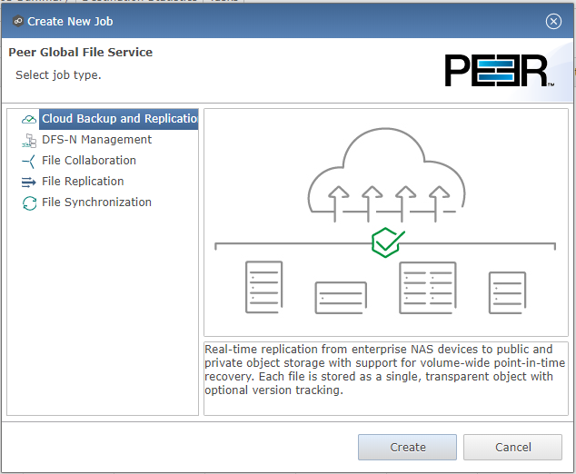
-
Select Cloud Backup and Replication and click Create.
-
Enter Initials - Replication to Objects as the name for the job and click OK.
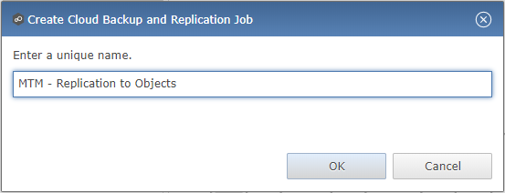
-
Select Nutanix Files and click Next.
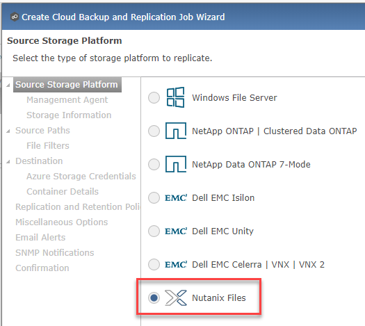
-
Select the Agent named PeerAgent-Files and click Next. This Agent will manage the Files cluster.
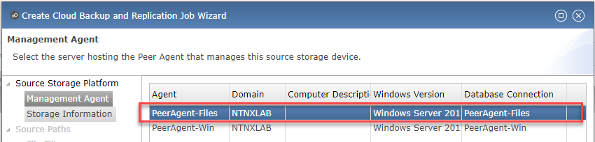
-
On the Storage Information page, you will see one of two pages. If another participant sharing your Files cluster has already done the Peer lab, you can select their Existing Credentials as shown here.
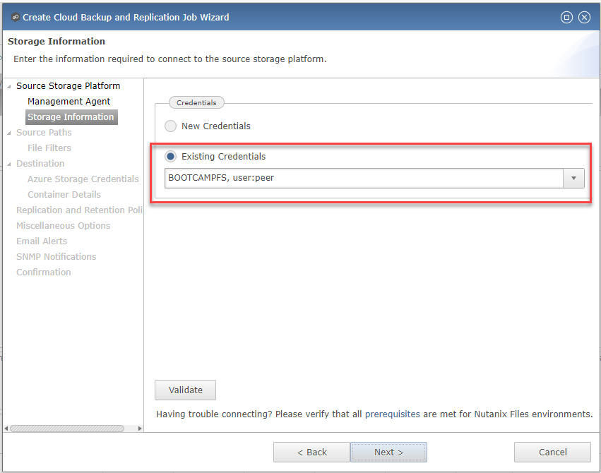
If you are the first participant on this cluster to do the Peer lab, fill out the following fields:
-
Nutanix Files Cluster Name - BootcampFS
The NETBIOS name of the Files cluster that will be paired with the Agent selected in the previous step.
-
Username - peer
This is the Files API account username configured earlier in the lab and MUST be in all lower case.
-
Password - nutanix/4u
The password associated with the Files API account.
-
Peer Agent IP - PeerAgent-Files IP Address
The IP address of the Agent server that will receive real-time notifications from the File Activity Monitoring API built into Files. It will be selectable from a dropdown list of available IPs on this Agent server.
-
-
Click Validate to confirm Files can be accessed via API using the provided credentials.
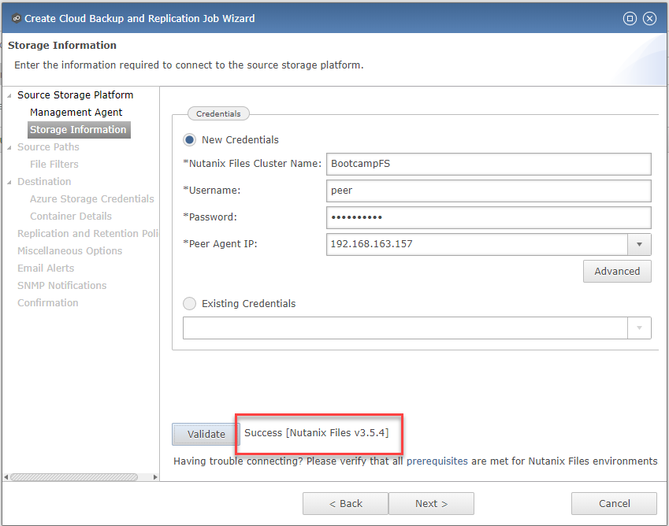
::: note ::: title Note :::
Once you enter these credentials, they are reusable when creating new jobs that use this particular Agent. When you create your next job, select Existing Credentials on this page to display a list of previously configured credentials. :::
-
Click Next.
-
Select your Initials-Peer share and click OK.
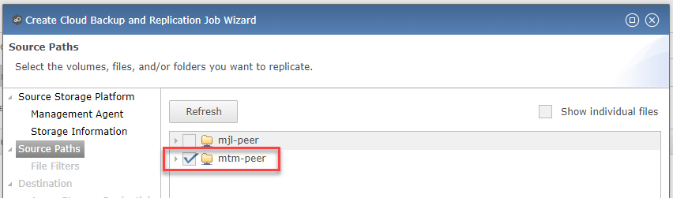
::: note ::: title Note :::
Peer Global File Service supports the replication of data within nested shares starting with Nutanix Files v3.5.1 and above. :::
::: note ::: title Note :::
With Cloud Backup and Replication, you can select multiple shares and/or folders for a single job. :::
-
On the File Filters page, verify the Default filter selected as well as the Include Files Without Extensions, and click Next.
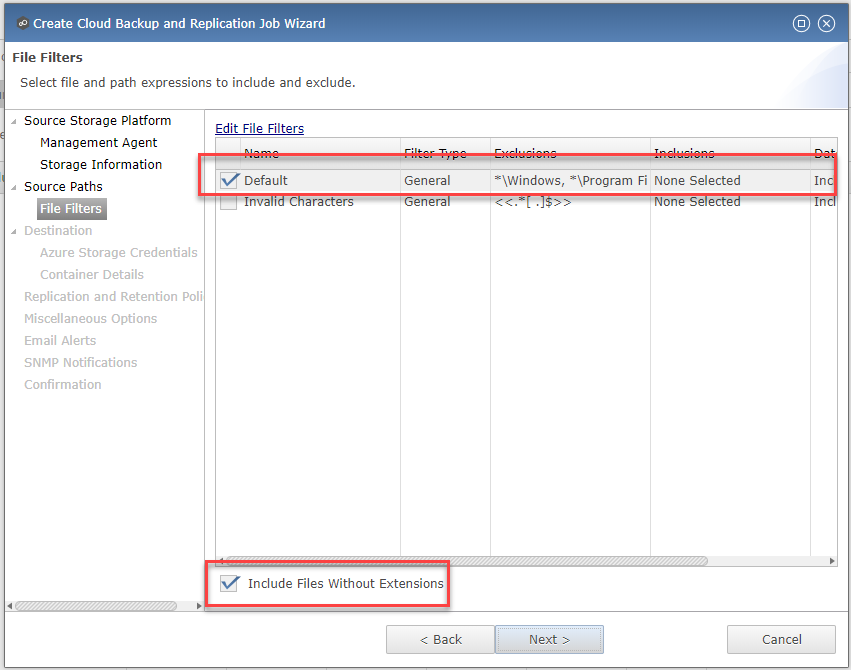
-
On the Destination page, select Nutanix Objects and click Next.
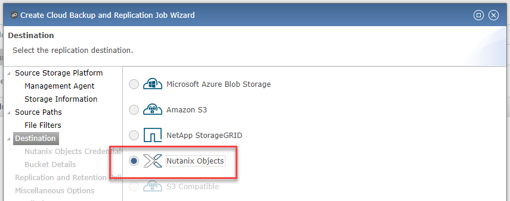
-
On the Nutanix Objects Credentials page, fill out the following fields:
-
Description -- Name your destination
This is a short name for the Objects credential configuration.
-
Access Key
The Access Key associated with the Objects account.
-
Secret Key
The Secret Key associated with the Objects account.
-
Service Point
The client access IP address or FDQN name of the object store.
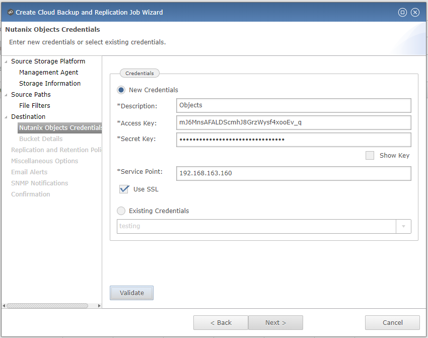
::: note ::: title Note :::
Refer to the Getting Client IP and Credentials for Nutanix Objects section above for the appropriate access and secret keys, as well as the Client IP of the object store. :::
-
-
Click Validate to confirm Objects can be accessed using the provided configuration.
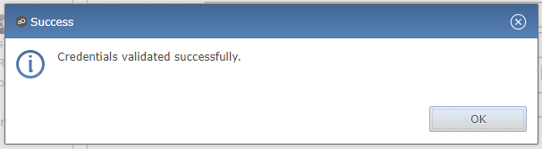
-
Click OK in the Success window, and then click Next.
-
On the Bucket Details page, deselect the Automatically name checkbox, and then provide a unique bucket name of initials-peer-objects.
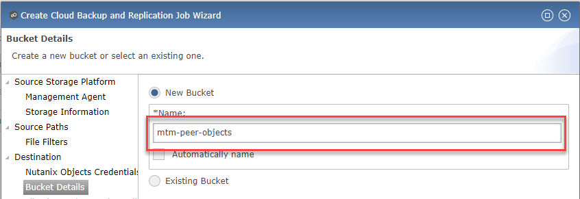
::: note ::: title Note :::
The bucket name MUST be in all lower case. :::
-
On the Replication and Retention Policy page, select Existing Policy, Continuous Data Protection, and then click Next.
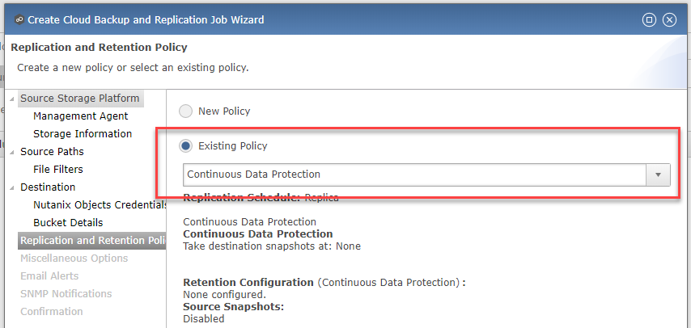
-
Click Next on the Miscellaneous Options, Email Alerts, and SNMP Alerts pages.
-
Review the configuration on the Confirmation screen, and then then click Finish.
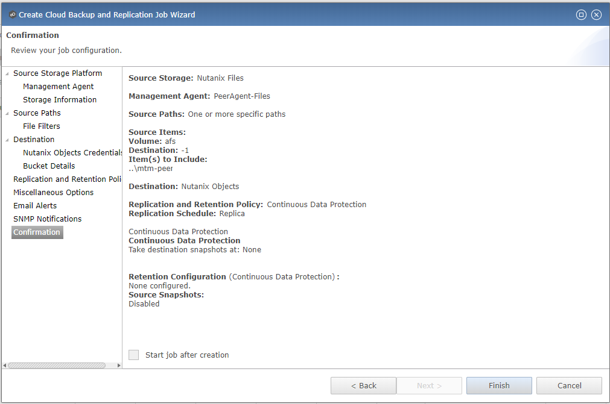
Starting a Cloud Replication Job
Once a job has been created, it must be started to initiate replication.
-
In the PMC Web Interface, right-click on your newly created job, and then select Start.
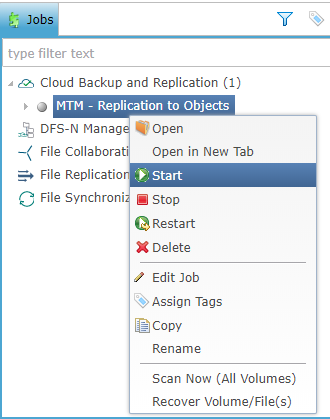
-
Double-click the job in the Job pane to view its runtime information and statistics.
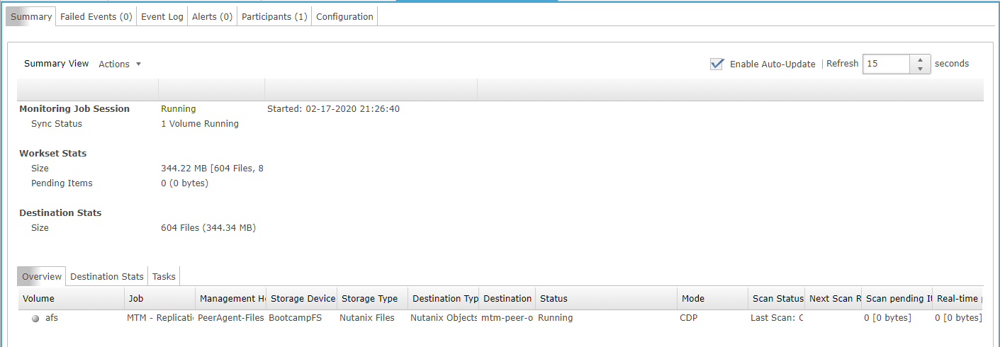
::: note ::: title Note :::
Click Auto-Update to have the console regularly refresh as files begin replicating. :::
Verifying Replication
::: note ::: title Note :::
This exercise requires the windows_tools_vm{.interpreted-text
role="ref"}.
:::
The easiest way to verify that files have been replicated into Nutanix Objects is to use the Cyberduck tool on your Initials-Windows-ToolsVM
-
Connect to your Initials-Windows-ToolsVM via RDP using the following credentials:
- Username - NTNXLAB\Administrator
- Password - nutanix/4u
-
Launch Cyberduck (Click the Window icon > Down Arrow > Cyberduck).
If you are prompted to update Cyberduck, click Skip This Version.
-
Click on Open Connection.
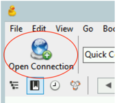
-
Select Amazon S3 from the dropdown list.
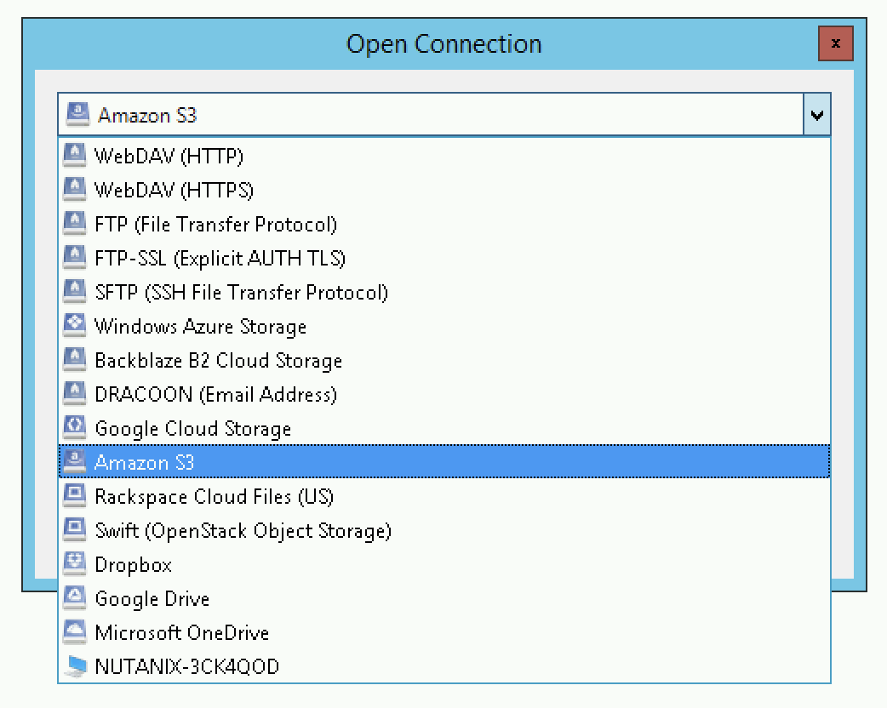
-
Fill out the following fields for the user created earlier, and then click Connect:
- Server - Objects Client Used IP
- Port - 443
- Access Key ID - Generated When User Created
- Password (Secret Key) - Generated When User Created
::: note ::: title Note :::
See the Getting Client IP and Credentials for Nutanix Objects section above for the appropriate access and secret keys, as well as the Client IP of the object store. :::
-
Check the Always Trust checkbox, and then click Continue in the The certificate is not valid dialog box.
-
Click Yes to continue installing the self-signed certificate.
-
Navigate to the appropriate bucket set above and verify that it contains content.
Congratulations! You have successfully setup replication between Nutanix Files and Nutanix Objects! Using Peer, this same approach can be leveraged to support scenarios including coexistence of file data with object-based apps and services as well as point-in-time recovery of enterprise NAS data backed by Objects.
Analyzing Existing Environments
::: note ::: title Note :::
This exercise requires the windows_tools_vm{.interpreted-text
role="ref"}.
:::
As the capacity of file server environments increase at a record pace, storage admins often do not know how users and applications are leveraging these file server environments. This fact becomes most evident when it is time to migrate to a new storage platform. The File System Analyzer is a tool from Peer Software that is designed to help partners discover and analyze existing file and folder structures for the purpose of planning and optimization.
The File System Analyzer performs a very fast scan of one or more specified paths, uploads results to Amazon S3, assembles key pieces of information into one or more Excel workbooks, and emails reports with links to access the workbooks.
As this tool is primarily for our partners, we would love to hear any feedback you have on it. Reach out to us on Slack via the #_peer_software_ext channel with comments and suggestions.
Installing and Running the File System Analyzer
-
Connect to your Initials-Windows-ToolsVM via RDP using the following credentials:
- Username - NTNXLAB\Administrator
- Password - nutanix/4u
-
Within the VM, download the File System Analyzer installer: https://www.peersoftware.com/downloads/fsa/13/FileSystemAnalyzer_win64.exe
-
Run the installer and select Immediate Installation.
Once the installation is complete, the File System Analyzer wizard is automatically launched.
-
The Introduction screen provides details on information collected and reported by the utility. Click Next.
-
The Contact Information screen collects information used to organize the output of the File System Analyzer and to send the final reports. Fill out the following fields:
- Company -- Enter your company name.
- Location -- Enter the physical location of the server that is running the File System Analyzer. In multi-site environments, this could be a city or state name. A data center name also works.
- Project -- Enter a project name or business reason for running this analysis. This (and the Company and Location fields) are used solely to organize the final reports.
- Mode -- Select the mode of operation to be used -- General Analysis or Migration Preparation. Migration Preparation is useful when preparing for a migration project between storage systems. In addition to collecting standard telemetry on file systems, this mode also offers the option to test performance of both the existing and new storage systems to help gauge potential migration performance and timing. For this lab, we will use General Analysis.
- Name/Phone/Title -- (Optional) Enter your name and contact information.
- Email -- Enter the email address to which the final reports will be sent. For multiple addresses, enter a comma-separated list.
- Upload Region -- Select US, EU, or APAC to tell the File System Analyzer which S3 location to use for uploading the final reports.
-
Click Next.
The File System Analyzer can be configured to scan one or more paths. These paths can be local (e.g.,
D:\MyData) or a remote UNC Path (e.g.,\\files01\homes1). -
Add the following paths:
C:\- The local C: drive of Initials-Windows-ToolsVM\\BootcampFS\<Your Share Name>\- A share previously created on Nutanix Files
-
Click Next.
Click the Start button to begin scanning the entered paths. When all scans, analyses, and uploads are complete, you will see a status that is similar to the following:
-
File System Analyzer will also email the report to all configured addresses. To view the full report, click the hyperlink(s) listed under Detailed Reports in the email. If multiple paths were scanned, you will also see a link to a cumulative report across all paths.
::: note ::: title Note :::
Report download links are active for 24 hours only. Contact Peer Software to access any expired reports. :::
Some systems may open these workbooks in a protected mode, displaying this message in Excel:
If you see this message at the top of Excel, click Enable Editing to fully open the workbook. If you do not do this, the pivot tables and charts will not load properly.
Summary Reports
Summary reports contain overall statistical and historical information across all paths that have been selected to be scanned. When you open a summary report, you are greeted with a worksheet like this:
Each summary report may contain some or all of the following worksheets:
- InfoSheet -- Details about this specific run. This page will also show Total Bytes formatted in both decimal (1 KB is 1,000 bytes) and binary (1 KiB is 1,024 bytes) forms.
- CollectiveResults -- A list of all paths scanned along with high-level statistics for each.
- History-Bytes -- Contains historical changes in bytes for each time each path is scanned.
- History-Files -- Contains historical changes in total number of files for each time each path is scanned.
- History-Folders -- Contains historical changes in total numbers of folders for each time each path is scanned.
::: note ::: title Note :::
History worksheets will only appear after running multiple scans. :::
Volume Reports
Volume reports give more detailed information about a specific path that has been scanned. When you open a volume report, you are greeted with a worksheet like this:
Each volume report may contain some or all of the following worksheets:
- Overview -- A series of pivot tables and charts showing high-level statistics about the path that was scanned.
- InfoSheet -- Details about this specific scan. This page will also show Total Bytes formatted in both decimal (1 KB is 1,000 bytes) and binary (1 KiB is 1,024 bytes) forms.
- OverallStats -- Overall statistics for the folder that was scanned. This includes total bytes, files, folders, etc.
- Analysis -- Includes a pivot table and a pair of charts highlighting additional statistics about the path that was scanned.
- History -- Shows statistics from each scan of this volume.
- HistoryCharts -- Contains charts showing historical changes in files, folders, and bytes for this volume.
- HighSubFolderCounts -- A list of all folders containing more than 100 child directories.
- HighByteCounts -- A list of all folders containing more than 10GB of child file data.
- HighFileCounts -- A list of all folders containing more than 10,000 child files.
- LargeFiles -- A list of all discovered files that are 10GB or larger.
- DeepPaths -- A list of all discovered folder paths that are 15 levels deep or deeper.
- LongPaths -- A list of all discovered folder paths that are 256 characters or longer.
- ReparsePointsSummary -- A summary of all reparse points discovered, regardless of file or folder.
- ReparsePoints -- A list of all folder reparse points discovered.
- TimeAnalysis -- A breakdown of total files, folders, and bytes by age.
- LastModifiedAnalysis -- A view of all files, folders, and bytes modified each hour for the past year. These numbers are then totaled and averaged to show files, folders, and bytes modified by: day of week; month; hour of the day; day of month; and day of year.
- CreatedAnalysis -- A view of all files, folders, and bytes created each hour for the past year. These numbers are then totaled and averaged to show files, folders, and bytes created by day of week, month, hour of the day, day of month, and day of year.
- LastAccessedAnalysis -- A view of all files, folders, and bytes accessed each hour for the past year. These numbers are then totaled and averaged to show files, folders, and bytes accessed by: day of week; month; hour of the day; day of month; and day of year.
- TLDAnalysis - A list of each folder immediately under a specified path with statistics for each of these subfolders. In a user home directory environment, each of these subfolders should represent a different user.
- TopTLDsByTotals -- A series of pivot tables and charts showing the top ten top-level directories based on total bytes used, total files, and total folders.
- TopTLDsByLastModBytes -- A pivot table and chart showing top 10 top-level directories based on most bytes modified in the past year.
- TopTLDsByLastModFiles -- A pivot table and chart showing top 10 top-level directories based on most files modified in the past year.
- LegacyTLDs -- A list of all top-level directories that do not contain any files modified in the past 365 days.
- TreeDepth -- A tally of bytes, folders, and files found at each depth level of the folder structure. For customers doing a pre-migration analysis, depths that appear as green are good candidates for PeerSync Migration's tree depth setting.
- FileExtInfo -- A list of all discovered extensions, including pivot tables sorted by total bytes and total files.
- FileAttributes -- A summary of all file and folder attributes found.
- SmallFileAnalysis -- A list of all files discovered below a certain size. This page is useful for estimating the storage impact of small files on storage platforms that have large minimum file sizes on disk.
- SIDCache -- A list of all the owners and SID strings that have been discovered.
::: note ::: title Note :::
History worksheets will only appear after running multiple scans. :::
Here is a sample of the LastModifiedAnalysis page mentioned above:
Integrating with Microsoft DFS Namespace
Peer Global File Service includes the ability to create and manage Microsoft DFS Namespaces (DFS-N). When this DFS-N integration is combined with its real-time replication and file locking engine, PeerGFS powers a true global namespace that spans locations and storage devices.
As part of its DFS namespace management capabilities, PeerGFS also automatically redirects users away from a failed file server. When that failed server comes back online, PeerGFS brings this file server back in-sync, and then re-enables user access to it. This is an essential Disaster Recovery feature for any deployment looking to leverage Nutanix Files for user profile and user data shares for VDI environments.
The following screenshot shows the PMC interface with a DFS Namespace under management.
Takeaways
- Peer Global File Service is the only solution which can provide Active-Active replication for Nutanix Files clusters.
- Peer also supports multiple legacy NAS platforms and supports replication within mixed environments. This helps ease adoption of and migration to Nutanix Files.
- Peer can directly manage Microsoft Distributed File Services (DFS) namespaces, allowing multiple file servers to be presented through a single namespace. This is a key component for supporting true Active-Active DR solutions for file sharing.
- Peer can replicate files from Nutanix Files and other NAS platforms into Nutanix Objects with optional snapshot capabilities for point-in-time recovery. All objects are in a transparent format that can be immediately used by other apps and services.
- Peer offers tools for analyzing existing file servers to help with resource planning, optimization, and minimally disruptive migrations.